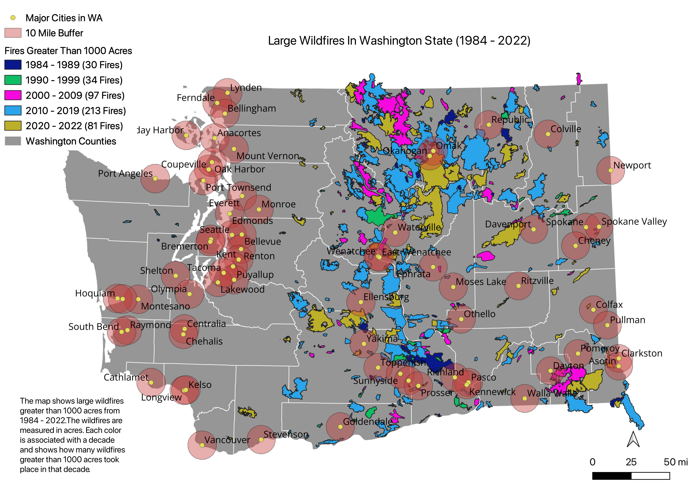

To get started on my research question I gathered my data from the Washington State Department of Natural Resources (Washington Large Fires 1973-2022) and the Washington State Department of Transportation (City Points). The data collected from the DNR included the year of the wildfire and the size reported in acres. The data from WSDOT contained 211 cities, 70 of which were categorized as major cities. To use this data, multiple spatial analysis operations were used. Since the data from the DNR Washington large fires contained over 1100 fires over the span of 50 years I only included fires that were considered large by the EPA (1000 acres). This was done by using Extract by Expression and only using wildfires greater than 1000 acres. Instead of 1100 wildfires the map now only shows 455. Once the wildfires were filtered there were no fires greater than 1000 acres from 1973-1983, so the data that I am presenting starts in 1984. The city points data from the WSDOT had 211 cities, I used Extract by Attribute to filter only the major cities which then resulted in only 70 cities. The last spatial analysis used was a ten-mile buffer around each city to show how close the large wildfires were and how it could have an impact on people's health and well-being, along with the buffer are labels of the cities to distinguish which cities are heavily impacted each year.
Here is a map dispalying the wildfire used from the data
